|
.
| Perfect
Dark Version Beta : Datadyne
Defection |
| Ci-dessous,
différente Photo, différent aspect, et Joanna avec un
Dragon / Farsight (Voir Armes) |
|
| Perfect
Dark Version Beta : Datadyne
Defection |
| Ci-dessous,
différente Photo, différent aspect, et Joanna avec un
Dragon / Farsight (Voir Armes) |
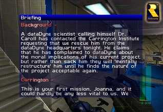
Ci-dessous, la Camera tournait différemment, et Joanna commence avec un Falcon 2 non-Silencieux sur la Photo.Ces 3 Photos sont issues d'un Film de Developpement, et prouvent que le Dragon avec lequel commence Joanna a une Fonction Farsight ! (Voir Troisième Photo) |
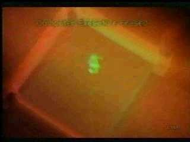

Ci-dessous, un Garde supplémentaire arrive en bas de l'Escalier. Sur la Deuxième Photo apparait clairemment Trent, alors qu'il était programmé comme simple Garde. Quant à la Troisième Photo, elle montre encore un Trent, armé de son Cougar Magnum (et Futur DY357-LX, voir la Section Armes). |
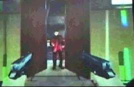

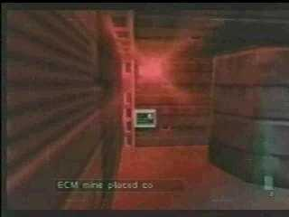
Explication ! La Mine Télécommandée (Remote Mine) servait à l'origine à faire peter le Tuyau sur la Droite de la Photo, et ainsi choper le Fromage. Remarquez égalemment les noms qui changent (voir Gadgets). Notez enfin que l'aspect de l'Ordinateur a changé, et son emplacemment quelque peu aussi. Ci-dessous, Joanna a shooté le Personnage chargé de vous "aider" à reprogrammer Dr. Caroll. Sur la Photo, on voit le Texte "Computer Executive Erased" qui signifie en gros que vous ne pouvez plus remplir l'Objectif. |
Ci-dessous, une Photo avec un Bouclier Beta (Beta Shield) que l'on voit aussi dans la Section Gadgets ainsi que le Trou créé pour aller choper le Fromage. |
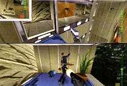 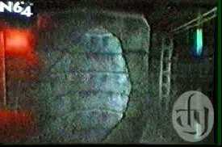
Ci-dessous, pas de Vitre-Rambarde, et la Porte semble un peu différente. Sur la Deuxième Photo, les Pistolets sont tenus d'une façon différente, et l'Ascenseur n'est pas exactement au meme endroit. On peut meme tomber par le trou pour acceder à l'Etage inferieur (le Film d'où est extrait cette image le prouve). |
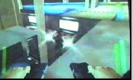
Ci-dessous, un Mr. Blonde ! Vous allez voir que au départ, ce Niveau contenait presque tous les Personnages du jeu en meme temps ! Trent, Blonde, et meme des Roswells ! Si si ! |
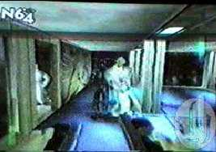
Ci-dessous, 3 Magnifiques Photos de developpement, avec pour la Photo du milieu Joanna cachée en bas sur le rebord... |
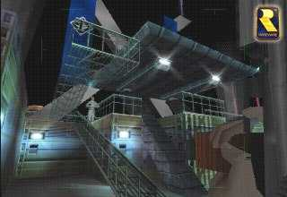 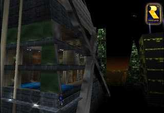

Enfin, 3 Photos montrant des Roswells vous accompagnant dans le Niveau. Je pense qu'ils furent retirés pour 2 raisons. La Première est Scenaristique, pour ne pas dévoiler les Personnages trop tot. La Deuxième est qu'ils auraient été d'une trop grande aide ! Remarquez que ce ne sont pas les Simulants en Cooperative, car ils ont des Cmp150. |
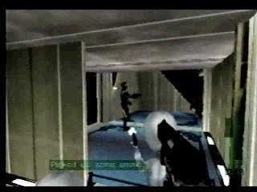